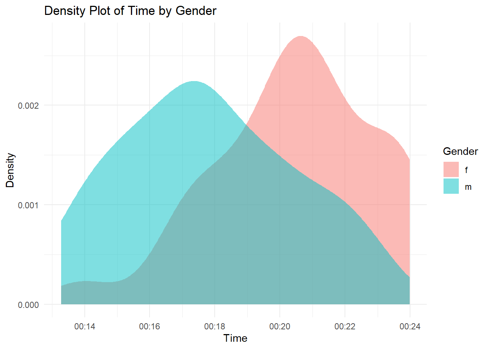

Through the course “Becoming Fluent in Data and Beyond,” I completed five assignments focused on honing my R skills rather than performing in-depth analysis. These assignments provided hands-on experience with various data types, including time-series, geospatial, panel data, and webscrapping. Here I am sharing some of my favourite plots and analysis showcasing different skills.
Analysis of ViaRun event at the Viadrina University
This practice provided valuable experience in working with time-series data, converting text data types into time format, and identifying implausible recordings.
Code
# Load necessary librarieslibrary(tidyverse)# Load dataViaRun_10_05_2023 <- readxl::read_xlsx("ViaRun_10_05_2023.xlsx")# Convert time string to POSIXct object and extract minutes and seconds (adjusted for the mistake)ViaRun_10_05_2023 <- ViaRun_10_05_2023 %>%mutate(time =as.POSIXct(Zeit, format ="%Y-%m-%d %H:%M:%S"),Minutes =hour(time),Secs =minute(time))# Convert Minutes and Secs to a time objectViaRun_10_05_2023 <- ViaRun_10_05_2023 %>%mutate(Time_Fixed =as.POSIXct(paste0("00:", Minutes, ":", Secs), format ="%H:%M:%S"))# Filter out rows with NA in Time_Fixed columnViaRun_10_05_2023 <- ViaRun_10_05_2023 %>%filter(!is.na(Time_Fixed))# Filter Implausible Recordsimplausible_recording <- ViaRun_10_05_2023 %>%filter(Time_Fixed <=as.POSIXct("00:13:07", format ="%H:%M:%S"))# Filter everything below 10 minutesViaRun_10_05_2023 <- ViaRun_10_05_2023 %>%filter(Time_Fixed >=as.POSIXct("00:10:00", format ="%H:%M:%S"))
Code
ViaRun_10_05_2023 %>%filter(Gender !="divers") %>%group_by(Gender) %>%ggplot(aes(x = Time_Fixed, fill = Gender)) +geom_density(alpha =0.5, color ="NA") +labs(title ="Density Plot of Time by Gender",x ="Time", y ="Density") +theme_minimal()

Analysis of Pokemon players in Germany
This was a good practice to work with geospatial data and creating interactive map. Pokemon GO gameplay data was used to plot players’ behavior in Germany including frequency and movement.
Code
# Load librarieslibrary(leaflet)library(leaflet.extras)library(sf)library(rnaturalearth)library(rnaturalearthdata)# Load DataGameData <-read_delim("GameplayLocationHistory.tsv")# Rename the columnsGameData <- GameData %>%rename(lat =`Latitude of location reported by game`,lon =`Longitude of location reported by game`)# Convert the GameData to a spatial objectgeodata_sf <-st_as_sf(GameData, coords =c("lon", "lat"), crs =4326)# Load country boundaries using rnaturalearthworld <-ne_countries(scale ="medium", returnclass ="sf")# Filter for Germanygermany_boundary <- world %>%filter(admin =="Germany")# Perform a spatial join to filter points within Germanygermany_points <-st_join(geodata_sf, germany_boundary, join = st_within)# Extract lon and lat from geometry columngermany_points <- germany_points %>%st_coordinates() %>%as.data.frame() %>%rename(lon = X,lat = Y) %>%bind_cols(germany_points %>%select(-geometry))# extracting only needed columnsgermany_points <- germany_points %>%select(1:3)
Code
library(viridis)# Calculating start, end date and max datestart_date <-min(as.Date(germany_points$`Date and Time`, format ="%Y-%m-%d"), na.rm =TRUE)end_date <-max(as.Date(germany_points$`Date and Time`, format ="%Y-%m-%d"), na.rm =TRUE)max_days <-as.numeric(difftime(end_date, start_date, units ="days"))# Calculating the number of days each location has been recordedgermany_points_map <- germany_points %>%mutate(`Date and Time`=as.Date(`Date and Time`),days_recorded =as.numeric(difftime(`Date and Time`, start_date, units ="days")))# Define color palette with viridiscolor_palette <-colorNumeric(palette =viridis(7),domain =c(0, 20, 40, 60, 80, 100, 120))# Create the interactive mapleaflet(germany_points_map) %>%addTiles() %>%addCircleMarkers(~lon, ~lat,color =~color_palette(days_recorded),radius =3,fillOpacity =0.8,popup =~paste("Days Recorded:", days_recorded),label =~paste0(germany_points$`Date and Time`, " (Days since start: ", days_recorded, ")") ) %>%addLegend("bottomright",pal = color_palette,values =~days_recorded,title =paste("Days Since Start:", paste("Start:", format(start_date, "%Y-%m-%d")),paste("End:", format(end_date, "%Y-%m-%d")),sep ="<br>"),opacity =1,labFormat =labelFormat(transform =function(x) x) ) %>%# Setting the view fixed to BerlinsetView(lng =13.4050, lat =52.5200, zoom =6)
Analysis of most expensive paintings in history
Here, I have scrapped a table from a Wikipedia page and cleaned and used the scrapepd to analyze relationships between variables.
Code
library(rvest)library(readr)# URL of the website to scrapeurl <-"https://en.wikipedia.org/wiki/List_of_most_expensive_paintings#Progression_of_highest_prices_paid"page <-read_html(url)df_wp <- page %>%html_element("table") %>%html_table(header =TRUE)paintings <-data.frame(df_wp)
Code
df <-read_csv("paintings_df.csv")# Selecting only needed columnsdf <- df %>%select(1, 3, 5, 6, 7)# Renaming columns requireddf <- df %>%rename(Price =1,Date =5 )# Cleaning Price columndf <- df %>%mutate(Price_cleaned = Price) %>%mutate(Price_cleaned =str_replace(Price_cleaned, "~", "")) %>%mutate(Price_cleaned =str_replace(Price_cleaned, "\\+", "")) %>%mutate(Price_cleaned =str_replace(Price_cleaned, "\\$", "")) %>%mutate(Price_cleaned =str_trim(Price_cleaned)) %>%mutate(Price_cleaned =as.numeric(Price_cleaned))# taking earleir year for ranged yearsdf <- df %>%mutate(Year_cleaned =case_when(# Handle years with shorthand end dates (e.g., 1904-07)str_detect(Year, "\\d{4}-\\d{2}") ~as.numeric(str_extract(Year, "\\d{4}")),# If there's a dash or slash, take the first 4-digit numberstr_detect(Year, "-|/") ~as.numeric(str_extract(Year, "\\d{4}")),# If it starts with "c.", take the 4-digit numberstr_starts(Year, "c\\.") ~as.numeric(str_extract(Year, "\\d{4}")),# Otherwise, extract any 4-digit numberTRUE~as.numeric(str_extract(Year, "\\d{4}")) ))# filtering out for final cleaned dfdf <- df %>%select(-1, -4, -5)
Since the Wikipedia page did not provide the artist’s age at the time of painting or at death. I merged another table containing this information to analyze the correlation between the price of the paintings and both the artists’ ages at death and their ages at the time of painting.
Code
plot3 <- df %>%filter(Price_cleaned >150)# built based on previous table, containing data above 150m USDdf3 <-read_csv("above_150.csv")plot3$age_at_painting <- df3$Age.at.Paintingplot3$age_at_death <- df3$Age.at.Deathggplot(plot3, aes(x = age_at_painting, y = Price_cleaned)) +geom_point() +geom_smooth(method ="loess", span =0.8, se =FALSE, color ="blue") +scale_x_continuous(breaks =seq(0, max(plot3$age_at_death), by =20)) +theme_minimal() +labs(title ="List of Most Expensive Paintings",subtitle ="Paintings over 150 million USD",x ="Age at Painting",y ="Adjusted Auction Price in Millions USD" )